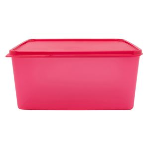

Tupperware Basic-5L
R$86,90

Peça da linha Basic Line Tupperware® ideal para preservar da maneira mais eficaz os seus alimentos e ingredientes. Com o seu formato quadrado e capacidade para até 5 litros, esse item lhe permite aproveitar todos os espaços de seu refrigerador, sem esquecer que eles ainda podem ser empilhados, o que lhe fará economizar ainda mais espaço.